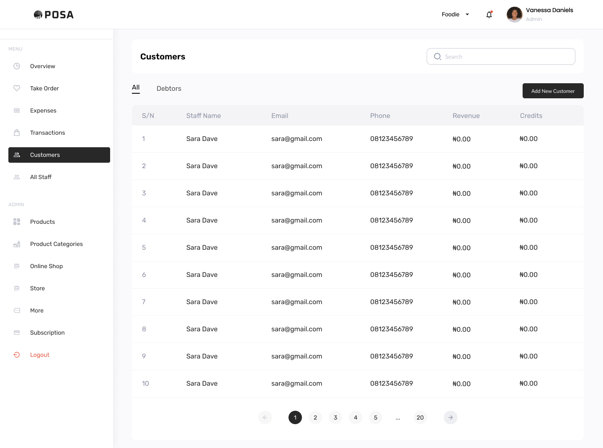

More than a place to upload products.
POSA is a retail and business management platform designed to help merchants manage everyday operations such as sales, transactions, inventory and staff, with support for online and offline business activity.
When I joined, the existing application had a limited set of screens and a narrow product experience. The opportunity was to help shape a more complete platform that could support the different tasks merchants needed to carry out.
My focus: make the product easier to understand and use by giving its growing set of features a clearer structure, more considered workflows and a consistent interface.
Giving a growing product a usable structure.
The product direction was still evolving. The Product Owner brought business needs, ideas and initial requirements into the process, while I explored the product space, studied relevant competitors and helped translate those needs into practical experiences.
The challenge wasn't simply to make individual screens look better. We needed to think about how merchants would move between different areas of the platform, understand information quickly and complete common business tasks without unnecessary friction.
Design ownership with a product mindset.
I was the Product Designer on a small team consisting of a Product Owner and two developers. I owned the design work across the POSA product experience, including the merchant-facing web application, mobile experience, marketing website and email templates.
My responsibilities extended into product definition and delivery. I worked with the Product Owner to shape feature ideas and requirements, identified gaps, proposed improvements and helped determine how features and workflows should behave.
- Explored competitor products and additional references to understand common patterns and opportunities.
- Created information architecture and user flows for key product areas.
- Designed more than 50 screens across the product work.
- Created user stories and acceptance criteria to clarify expected behaviour.
- Built a reusable design system and component library for consistency and maintenance.
- Worked with developers through implementation, reviews, testing and iteration.
I also designed the POSA marketing website and email templates for new-user sign-up and weekly sales summaries. The original design files for those experiences are no longer available to me, so this case study focuses visually on the recovered product screens.
Making the platform feel like one product.
As the product expanded, one important part of the work was helping organise the growing set of capabilities into a structure merchants could understand. I designed the dashboard and navigation around the different areas of business management, including orders, expenses, transactions, customers, staff, products and store-related settings.
I used competitor research and product exploration to identify patterns worth considering, then applied judgement to the specific needs of POSA. The Product Owner and I discussed requirements and priorities; I translated those decisions into flows, interface structures and detailed interactions.
Designing for everyday merchant tasks.
The recovered screens show an early version of the web application — the first design direction users started with. The live product has since changed, with additions and removals made after the last time I reviewed it. These images should therefore be understood as historical design artefacts, not screenshots of the current product.

The dashboard brought important business information together, including sales, orders, customers, sales trends, top-selling products and recent orders. A key design consideration was presenting several kinds of information in a way that remained scannable and useful.


Staff management needed to support both an overview of existing team members and a clear way to add new people. The table and form represent two connected parts of that workflow.


Customer records and expense entry show how the platform extended into the operational details of running a business, beyond the headline dashboard metrics.
A reusable system for a growing product.
POSA already had an established brand identity, including its logo, colours and typography. I worked within that foundation and created a reusable product design system to make the interface more consistent and easier to maintain as new features were added.
The system included colour and typography styles, spacing rules, buttons and variants, input fields and interaction states, and reusable components. I used it to support consistency across the web and mobile product experiences.
Keeping design connected to implementation.
I worked closely with the two developers to explain interactions, clarify expected feature behaviour and review implemented screens against the designs. I participated in sprint planning and stand-ups, created and updated tasks in Linear, followed up on progress and took part in QA and testing before releases.
After delivery, I also joined feedback and improvement discussions. While I did not have direct access to product analytics, merchant feedback helped inform conversations about the product experience and what could be improved next.
Designing the product, not just the interface.
POSA strengthened how I think about the relationship between product decisions and interface design. I learned to work with evolving requirements, organise complex business information, communicate decisions with engineering and consider how each new feature fits into the wider experience.
It remains one of the projects that most shaped my approach: start with the problem, understand the people and business context, and make deliberate decisions about the experience we're building.
Note on the visuals: These are selected original screenshots from the initial web application design. The product evolved after this version, and I no longer have access to the original mobile app or marketing website design files.